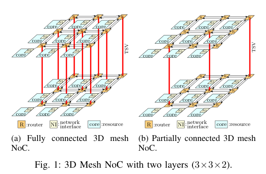
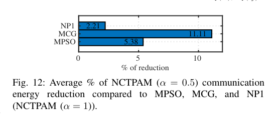

本报告由大模型自动生成，可能存在理解、归纳或数据转述错误；请以原论文为准。 Congestion-Aware Vertical Link Placement and Application Mapping Onto 3-D Network-on-Chip ArchitecturesRamesh Sambangi, Kanchan Manna, Vinay Chakravarthi Gogineni, Santanu Chattopadhyay, Sudipta Mahapatra · IEEE Transactions on Computer-Aided Design of Integrated Circuits and Systems · 2024 · 原文 · PDF 报告模型：gemini-3.1-pro-preview / high 这篇文章《Congestion-aware Vertical Link Placement and Application Mapping onto Three-Dimensional Network-on-Chip Architectures》（基于拥塞感知的3D片上网络垂直链路布局与应用映射）探讨了如何利用强化学习技术，在三维片上网络架构中联合优化应用程序的运行映射与硅通孔（TSVs）的物理位置分布。 为了帮助理解，这里首先建立背景补充和系统全貌：现代多处理器系统级芯片（MPSoC）通常包含数十到数百个计算单元（即知识产权核，IP-cores）。为了让这些核心高效通信，硬件设计者采用了片上网络（Network-on-Chip, NoC）架构。NoC 由路由器（Routers）、网络接口（Network Interfaces, NIs）和物理链路（Links）组成。每个 IP 核通过 NI 连接到一个路由器，路由器之间通过链路相连形成拓扑结构（如网格 Mesh）。当芯片从 2D 扩展到 3D 堆叠（3D IC）时，不同物理层之间的路由器需要通过垂直的硅通孔（Through-Silicon Vias, TSVs）进行通信。在本文讨论的系统层级中，应用映射（Application Mapping） 是一个典型的电子设计自动化（EDA）和系统软件设计时的关键步骤，它的任务是决定把软件应用程序中的各个计算任务（即 IP 核）分配到具体哪一个物理路由器所连接的位置上。这一映射决定了硬件架构层面的数据流走向、通信跳数（Hop count）和链路带宽的占用。 第一节：引言与背景（Introduction & Literature Review）文章首先指出，在完全连接的 3D NoC（FC-3D-NoC，即上下相邻层的每一个路由器之间都有 TSV 相连，如图 1(a) 所示）中，TSV 的数量极其庞大。然而，TSV 的制造会占用巨大的硅片面积、降低良率并带来高昂成本。因此，工业界更倾向于采用部分垂直连接的 3D NoC（PVC-3D-NoC，如图 1(b) 所示），即只有少数特定的路由器配备 TSV。  在 PVC-3D-NoC 中，由于 TSV 数量减少（即网络对分带宽减小），如果两个需要频繁通信的 IP 核被映射到了距离 TSV 很远的不同物理层面上，数据包在网络中传输的延迟和功耗就会急剧增加。此外，如果应用的通信流量集中在某几个特定的 TSV 上，会导致局部拥塞、热点甚至 TSV 磨损失效（影响可靠性）。因此，产生了一个复杂的跨层协同优化问题：如何在设计时（Design time），根据特定应用的通信需求，同时决定哪些路由器应该放置 TSV（硬件架构定制），以及各个 IP 核应该放置在哪个路由器节点上（软件到硬件的映射）？ 作者指出，寻找最优的应用映射是一个二次分配问题（QAP，属于 NP-hard），而放置 TSV 是一个无容量设施选址问题（UFLP，也是 NP-hard）。 现有的方法多采用启发式算法（如遗传算法、粒子群优化等），容易陷入局部最优，且对于复杂的非线性通信关系难以手工设计提取规则。虽然近期有基于机器学习的映射方法被提出，但这些方法大多针对 2D 或 FC-3D-NoC，且由于缺乏最优解标签（Label），监督学习效果受限。为此，本文提出了一种基于强化学习（Reinforcement Learning, RL）的新框架，无需标签即可在探索中学习到近乎最优的映射与 TSV 布局策略。 第二节：问题定义与数学建模（Problem Definition）为了让优化算法能够理解硬件限制和软件需求，文章在此处建立了严格的数学抽象，这就是典型的 EDA 工具将架构约束转化为目标函数的桥梁。 作者首先定义应用程序被抽象为 IP 核图（IP-core graph, ICG），表示为有向图 。其中，集合 代表所有的 IP 核， 代表具体的两个 IP 核节点；集合 代表 IP 核之间的通信依赖， 代表从核 到核 的通信边。边 的权重记为 ，代表源 IP 核 和目的 IP 核 之间的通信带宽需求，其单位原文未说明。 接着定义 3D NoC 的硬件拓扑图（NoC topology graph, NTG），表示为 。集合 代表所有的路由器节点， 是其中的一个顶点；集合 代表物理链路， 表示 NTG 中的源节点 和目的节点 之间的链路。链路 的最大可用物理带宽约束记为 ，其单位原文未说明。 应用映射的本质是寻找一个单射函数 ，对于每一个 IP 核 ，找到一个对应的物理节点 ，使得 。为了保证数学上的排列属性，作者要求 ICG 中的核数量不能超过 NTG 的节点数量；如果核数量较少，则在 ICG 中添加不与任何节点通信的虚拟节点（Dummy nodes），使得两图节点数相等（设为 ）。因此，一个映射解可以表示为一个序列 （其中 是 NTG 中的节点总数， 的取值范围从 1 到 ），序列中的位置 对应节点编号，而该位置上的元素 指示映射到该节点的 IP 核。 在给定的映射解下，作者定义了经过物理链路的数据流约束。当 和 通信时，数据包在网络中经过的具体路径由硬件指定的路由算法决定（本文针对 FC-3D 采用确定性的 XYZ 路由，针对 PVC-3D 采用 Elevator-first 路由）。定义 表示由 ICG 中 IP 核 和 之间的通信边 引起的流经 NTG 中物理链路 的数据流量，其单位原文未说明： 这里 ，， 表示硬件路由算法给出的从 到 途径的所有链路集合。系统必须满足所有通信在该链路上的叠加流量不超过其物理带宽上限约束：，其中 是路由器节点集合的总数。 架构层面的通信代价被建模为优化目标。对于 FC-3D-NoC，对于给定应用 和映射解 ，总通信代价（Communication cost） 定义为： 这里 原文未定义/未说明。 是架构中两节点间的跳数（Hop count），即经过的中间路由器数量。这个代价函数直接体现了架构与 EDA 的跨层联系：EDA 优化器试图最小化流量与跳数的乘积，从而间接降低了底层硬件的网络延迟和动态功耗。 对于仅保留 数量 TSV（总数为 ）的 PVC-3D-NoC，除了通信代价，作者还引入了 TSV 流量的负载均衡。定义 TSV 流量方差（Flow variance） 为： 其中， 是流经第 个 TSV 的总流量； 是第 层中存在的 TSV 之间流量的平均值； 是一个指示函数，当第 个 TSV 处于硬件路由路径 中时值为 1，否则为 0。 综合上述两者，对于 PVC-3D-NoC，最终的设计目标函数 即总成本 定义为两者的加权和： 其中 是设计者设定的权重参数，决定了更偏向于降低整体通信延迟（ 接近 1）还是更偏向于避免局部 TSV 拥塞热点（ 接近 0）。算法的核心任务就是最小化对应的 。 第三节：强化学习框架与策略网络设计（RL Formulation & Methodology）作者提出了一种名为 NeurMap3D 的神经网络强化学习模型，用于生成高质量的应用映射解。在这里，RL 的“环境（Environment）”是给定的 3D NoC 硬件处理器；“代理（Agent）”是神经网络；“状态”是应用图的特征；代理采取的“动作（Action）”是输出一个具体的映射排列序列 。代理在执行动作后获得的“奖励（Reward）”被建模为成本函数的负值，即 （代理的目标是最大化奖励，也就是最小化成本）。 网络架构由两部分串联组成：图注意力网络（Graph Attention Network, GAT）和指针网络（Pointer Network, Ptr-Net）。 图注意力网络 (GAT) 用于提取输入的应用程序通信图（ICG）的结构特征。对于 ICG 中的每一个节点 ，都有一个初始特征向量 ，其中 原文未定义/未说明，且 的单位原文未说明。原文指出 代表 ICG 中存在的 IP 核的数量。首先计算节点 与其邻居 之间的注意力分数前置项 ： 此处 是网络中需要被学习的权重矩阵，其维度原文未说明； 代表向量拼接操作； 是深度学习中标准的带泄露修正线性单元激活函数。接着使用 Softmax 函数在节点 的邻居集 上对分数进行归一化，得到正式的注意力系数 ： 这个系数代表了邻居 对节点 的重要程度。然后，利用该系数对邻居的特征进行加权求和，并通过非线性激活函数 （此处设定为 Sigmoid 函数），得到节点更新后的特征表示 。为了增强学习稳定性，作者采用了多头注意力机制（Multi-head attention，设定头数 ），使得最终的节点特征表示为 个独立计算结果的平均值： 指针网络 (Ptr-Net) 接收 GAT 输出的一系列节点特征 ，并负责逐个决策将哪个 IP 核放到当前的 NoC 节点上。它包含一个基于长短期记忆网络（LSTM）的编码器和一个 LSTM 的解码器。 编码器在时间步 按照序列顺序处理特征： 此处 和 分别是编码器在步骤 的隐藏状态和细胞状态， 表示 LSTM 内部的计算过程。 解码器用于在时间步 生成输出序列。它在第 步利用前一步所“指向”的输入特征 和历史隐藏状态计算当前状态： 此处的上下文向量 原文未详细说明展开公式，仅注名参考文献 [36] 的附录。随后，解码器将当前的隐藏状态 与编码器对所有输入元素的隐藏状态 进行比较，计算出指向第 个输入元素的注意力概率 ： 其中 均为可学习参数，它们的维度原文未说明， 是转置操作。这个概率 就代表了在第 步时（即对应物理拓扑的第 个节点），网络决定选择第 个 IP 核的概率。通过链式法则，整个映射序列 在给定应用 下的生成概率 为序列每一步概率的乘积： 模型预训练与参数更新（Pretraining for FC-3D） 作者使用基于梯度的 REINFORCE 强化学习算法对网络参数 进行优化。优化的目标是让预期的回报最大化，即代价函数 的期望 最大： 参数的更新梯度依据 REINFORCE 算法并采用基线来降低方差。在训练时，随机采样 个 ICG 训练图样本（即 Batch size，原文明确记为采样 个图 ），并对每个图生成 个独立的映射序列样本（）。网络参数 的梯度近似估计为： 其中，基准值 。利用这一梯度，网络使用 Adam 优化器进行参数更新。 扩展到 PVC-3D 的 NCTPAM 算法 由于预训练的模型针对的是固定的 FC-3D，作者提出了 NCTPAM（神经网络拥塞感知 TSV 布局与应用映射）算法来解决 PVC-3D 下 TSV 位置与映射强耦合的难题。该算法分两步执行（算法 2）：
第四节：实验评估与局部参数更新策略（Implementation Details & Evaluation）文章使用标准的 NoC 应用程序图（如 MPEG-4 等）、TGFF 工具生成的合成图，以及 PARSEC 真实世界基准测试集对模型进行评估。对比的基准方法包括 MPSO（多粒子群优化算法）和 MCG 算法。 为了加快微调过程的执行速度，作者提出了 NCTPAM-P (Partial Update) 策略。这是本文针对算法实际部署时的耗时瓶颈做出的工程权衡：在使用 REINFORCE 微调特定应用时，不再更新整个神经网络（GAT 和编码器参数被冻结），而只更新 Ptr-Net 中解码器的参数。 实验结果支持了以下关键结论：
第五节：框架的泛化——能量感知映射（Generalization of the Framework）作为对框架通用性的验证，作者展示了只要修改底层目标函数的定义，该强化学习模型就能优化新的硬件指标。此处作者引入了基于比特能量的模型，旨在最小化数据在 NoC 硬件中传输的动态功耗。 底层架构的通信能量代价模型定义为： 其中， 是将一比特数据从 IP 核 传输到 所消耗的能量： 这里 表示跳数； 是通过单个路由器消耗的能量，其单位原文未说明； 是在 NoC 中存在的路由器之间的链路上消耗的能量，其单位原文未说明。相关的约束条件为： 其中 是集合， 和 是集合 中的 IP 核； 是集合， 和 是集合 中的元素； 是集合的元素总数。此时，将 RL 代理的损失函数修改为 ，即可训练出一个专为降低 NoC 能耗设计的映射工具。结果表明（图 12），NCTPAM 同样在能量优化上超越了基于粒子群和启发式的基线方法。  总结主线与局限性主线梳理： 本文的源起是 3D 芯片设计中的一个硬性物理约束：TSV 面积大、成本高，不能像理论模型那样在 3D NoC 中随处放置。这就带来了一个问题——必须在应用层级解决 TSV “放哪里”以及“程序模块放哪里”，以防止有限的垂直通道被拥塞挤爆。为此，作者先构建了一个理解通信结构的图神经网络（NeurMap3D），然后以此为核心引擎，利用贪心策略先找高流量点放置 TSV，再用强化学习微调映射序列，以达到既缩短总体物理通信距离、又均衡 TSV 压力的目的（NCTPAM）。最后通过冻结部分参数的网络设计（NCTPAM-P），解决了机器学习辅助 EDA 时“算法运行太慢”的工程难题。 核心假设与局限性：
|